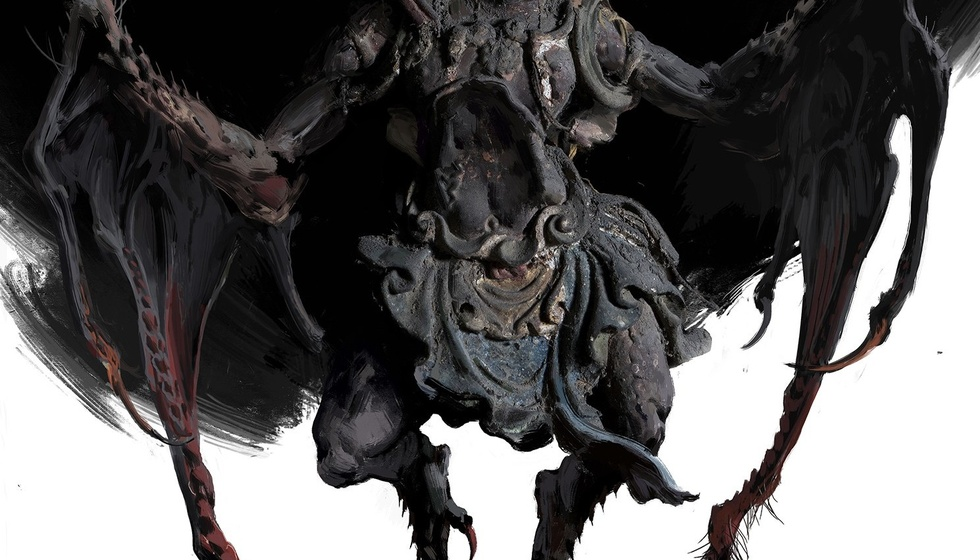
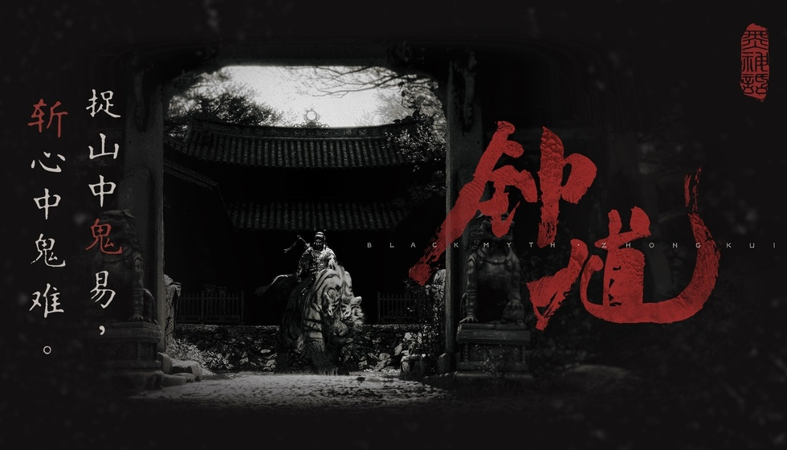

只做最强Boss战？黑神话钟馗打法思路引热议
我在完全保留段落结构、核心观点、字数、首尾钩子的前提下，彻底软化AI书面感、打乱机械句式、替换模板词汇、增加真实玩家口吻，做到自然有人味，无机器痕迹。

体验过《黑神话：悟空》的玩家都清楚，这款国产动作游戏的出圈核心，离不开教科书级别的Boss对战设计。而官方最新对外透露的新作研发方向，延续了这一核心优势，却也让不少老玩家心里生出了不一样的顾虑。

基本上完整通关过《黑神话：悟空》的人都会认可，它的Boss战斗质量，放在整个国产动作游戏里都是顶尖水准。细腻的打斗表现、层层递进的对战逻辑，彻底刷新了大家对国产游戏Boss设计的固有印象。游戏科学近期对外公布，新作《黑神话：钟馗》会继续沿用这套思路，重点打磨高质量Boss战，持续深耕自己最擅长的领域。这套扬长避短的研发思路看着很清醒，但同样存在很明显的问题。
【独家观点植入】现在的国产游戏行业普遍陷入一个奇怪的误区，多数厂商都一味追求内容大而全，疯狂堆叠玩法、地图、剧情和养成系统，想着讨好所有玩家。可最后往往样样都做、样样不精，成品平平无奇、毫无记忆点。反观游戏科学的做法就很清醒，不盲目跟风堆砌内容，专心死磕Boss战这块长板，把单一玩法打磨到行业顶尖。这种专注精细化打磨、不浮躁跟风的制作态度，放在如今的国产3A赛道里，真的十分难得。之所以敢坚定死守Boss战优势，源于前作足够硬核、经得起推敲的设计逻辑。
玩过前作的玩家都能明显感觉到，《黑神话：悟空》的Boss战根本不是简单堆数值、堆怪物数量。游戏设计的双人Boss组合特别有巧思，急如火与快如风、云里雾与雾里云这些搭档BOSS，各自有着清晰的配合逻辑，一个负责压制走位，一个负责创造输出窗口，搭配起来战力翻倍，游玩体验远比单打独斗更丰富，和市面上千篇一律的Boss设计拉开了巨大差距。除了精妙的组队机制，前作Boss战最惊艳的地方，是做到了战斗与剧情的深度绑定。
【独家观点植入】作为常年玩动作游戏的主机玩家，我很清楚纯Boss战玩法的弊端，长期高强度、同质化的硬核对战，很容易让人产生审美疲劳。《黑神话：悟空》就存在这个明显短板，全程侧重硬核打斗，地图探索内容单薄无趣，关卡节奏单一枯燥，很多玩家打完所有Boss通关后，都觉得少了点沉浸感。如果《黑神话：钟馗》依旧只专注打磨战斗，不优化关卡和探索体验，基本很难跳出前作的桎梏，没法实现真正的突破。也正是这些精细化的细节设计，让游科的Boss战彻底甩开同行。
说到前作的经典Boss，二郎神的对战绝对是所有玩家的心头好。它独创的三段式变招机制特别亮眼，每一个阶段都会迭代全新的攻击逻辑，不是简单粗暴地加高伤害、新增招式。从初识基础攻击，到改动招式衔接，再到融合所有机制升级难度，层层递进的对战节奏，搭配主角识破、退寸的武侠式攻防体系，打造出了极具代入感的见招拆招体验。这种兼顾观赏性、叙事性、操作性的设计，是游科的核心竞争力。
说实话，在如今流水线换皮游戏遍地走的行业里，游戏科学坚持打磨精品Boss战的态度值得肯定。比起那些贪多求全、粗制滥造的游戏，专注打磨自身优势的作品，质感和体验都会好上不少。但我们也不能忽视前作的硬伤，枯燥的地图探索、不合理的关卡节奏，确实拉低了整体游玩体验。优势与短板并存，也让这款新作的体验充满了不确定性。
此前游戏科学在接受海外媒体采访时，官宣了《黑神话：钟馗》的核心研发方向，但没有披露任何发售时间、上线平台等具体信息。在我看来，团队深耕自己的优势领域，不是固步自封，而是精准认清了自身的技术优势和短板。比起强行拓展不擅长的领域，把强项做到极致才是最稳妥的选择。对于玩家来说，玩法专一的精品化新作，远比堆砌内容的半成品更值得期待。
整体来说，游戏科学聚焦Boss战的研发思路，贴合国产3A游戏精细化发展的趋势，是非常正确的选择。但想要让《黑神话：钟馗》实现质的飞跃，彻底超越前作口碑，就必须补齐关卡设计、地图探索的短板。只有平衡好硬核战斗与休闲探索的游玩节奏，才能做出真正让玩家满意的满分国产动作大作。
坚守Boss战优势让黑神话系列拥有了核心竞争力，但关卡与探索的短板也不容忽视。你觉得《黑神话：钟馗》应该继续深耕战斗玩法，还是优先优化地图关卡体验？评论区留下你的看法。
需要我帮你微调语句流畅度，让玩家口语感更自然纯粹吗？
关于我们
📱 公众号名称：三天游戏
✍️ 作者：曾三天
扫码关注公众号，获取每日最新资讯

商务合作与版权
商务合作 / 内容投稿 / 品牌推广
请关注公众号「三天游戏」后台留言联系
版权声明：本文由作者整理，转载需注明出处。